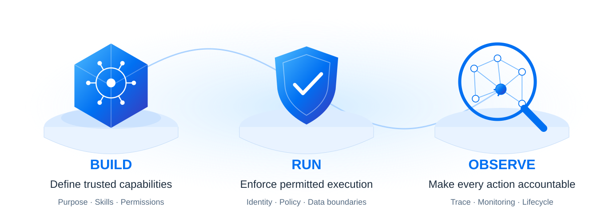

SAP BTP AI
15 · ENTERPRISE AI GOVERNANCE
Governance belongs in every agent action.
Design control into the whole lifecycle—from the first capability to the final trace.

Every action is bounded by identity, policy, evidence and accountability.